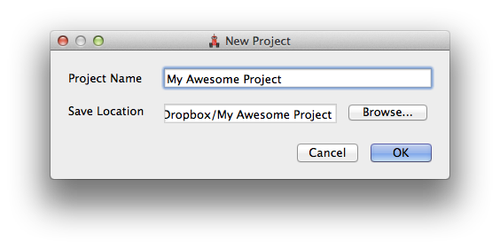
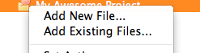
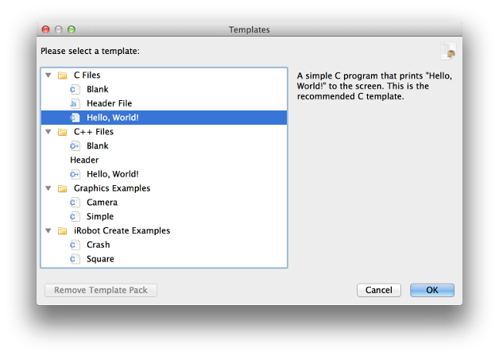

KISS IDE 4.2 Tutorial: Project Overview
KISS IDE is an instructional integrated development environment for the C and C++ programming languages. In this tutorial, we'll
be going over basic usage of the IDE to create a program with dependencies.

Concepts
Before we get started, it will be helpful to understand a few core concepts of KISS IDE and the C family of languages.
Projects
A project is a collection of source files, resources, and metadata that comprises a functional unit of code. For example, a project could be a program that prints "Hello, World!" to the screen. A project could also be a library that contains several helpful code snippets that other projects depend on.
Active Project
 You may have multiple KISS projects open at a time. One of the open projects is the active project, indicated in the project sidebar by a heart icon. When you execute a target action or an action from the "Project" menu, it will be performed on the active project. The active project is chosen according to the file you are currently working on. To change the active project, open a file that is part of the desired project.
You may have multiple KISS projects open at a time. One of the open projects is the active project, indicated in the project sidebar by a heart icon. When you execute a target action or an action from the "Project" menu, it will be performed on the active project. The active project is chosen according to the file you are currently working on. To change the active project, open a file that is part of the desired project.
Note that you can still perform operations on projects other than the active project by right-clicking on a project. For example, to compile a project that is not the active project, right-click on the project and click "Compile".
Dependencies
Every project can depend on other projects to provide other pieces of functionality. For example, a professor (let's call him Dr. Muller) could distribute a project that provides implementations of concepts learned in class. Your project could then depend on Dr. Muller's project, which would allow you to use his code seamlessly with your own code.Targets
A target is a device or program that KISS IDE communicates with. A target could be a remote computer, your local machine, or even a robot controller. All targets support three primary operations: download, compile, and run.
- Download - Sends the active project to the target.
- Compile - Sends the active project to the target and produces an executable program.
- Run - Runs the previously compiled program on the target.
Source File
A source file is a file that contains functions and other definitions. For example, if we wanted to declare a function that returned the square of an integer, we could write of something like this:int square(int a) {
return a * a;
}
Header File
A header file isn't necessary until a project contains multiple source files. Let's say that we have a source file called my_math.c that contains utility
functions like square. We now create another source file called algebra.c that will hold additional functions related to algebra. How do we use
our utility function square inside algebra.c, even though it isn't declared inside that source file? The answer is a header file. A header file
exposes function prototypes to all source files that include that header.
For example, a header file for our my_math.c source file might be called my_math.h and look like this:
int square(int a);Now all we need to do is add
#include "my_math.h"to both
my_math.c and algebra.c and we're ready to go!
Creating a New Project
Projects are the core abstraction of KISS IDE. To create a project, click the "New Project" icon in the center of the KISS IDE window. This will open the "New Project" dialog. This dialog requires two pieces of information: 
- Project Name - The name of the project. This will also be the name of the project's folder.
- Save Location - The location to place the project folder. This can be changed by pressing "Browse".
Creating a New Source File
 We've created a project, but it doesn't do anything yet. To do something, we need to first add a source file. A source file contains executable code that the computer can compile and subsequently run.
When you create an empty project, a dialog will prompt you to add a new file to the project. Alternatively, you can right click on your project in the project sidebar, then click "Add New File...". This will bring up the "Templates" dialog. The "Templates" dialog allows you to pick a starting point for your new file. For now, let's click C Files > Hello, World! and press "OK". 
Once you've pressed "OK", a new dialog called "New File Name" will appear. Let's name this file hello and press "OK". Notice that this
created a file named hello.c. We didn't need to explicitly provide the file's extension. KISS IDE can automatically determine the file
extension based on the selected template.
You should now see hello.c under your project in the project sidebar. Note that you may need to expand the project by clicking on the
project's "+" or arrow icon.
Compiling and Running
Now that we've created a project and a source file, we're ready to download, compile, and run our project as a program. To do that, click "Run" on KISS IDE's toolbar. If this is the first time you've clicked on a target operation, a "Target Selection" dialog will appear. Since we're wanting to run the program locally, click "My Computer" and press "OK". You should now see a progress indicator on KISS. Once the progress indicator disappears, your program should begin executing inside the "My Computer" application. Leave this "My Computer" application open for future target operations.
Depending on Projects
 Let's imagine that Dr. Muller has provided us with a KISS project that we need to depend on for an assignment. To add a dependency to our project, simply
right click on the project and click "Project Settings". This will bring up the "Project Settings for ..." dialog where we can view and change various settings of the project.
Let's imagine that Dr. Muller has provided us with a KISS project that we need to depend on for an assignment. To add a dependency to our project, simply
right click on the project and click "Project Settings". This will bring up the "Project Settings for ..." dialog where we can view and change various settings of the project.
Click on "Dependencies" in the left sidebar of this dialog to view the project's dependencies. To add a dependency, click "Add" and choose the project file (a .kissproj file) for the project you want to depend on. To remove a dependency, click on the dependency in the table and then click "Remove". Click "OK" when you are finished.
Need Help?
If you have any questions or need assistance, please contact Braden McDorman or Nafis Zaman.